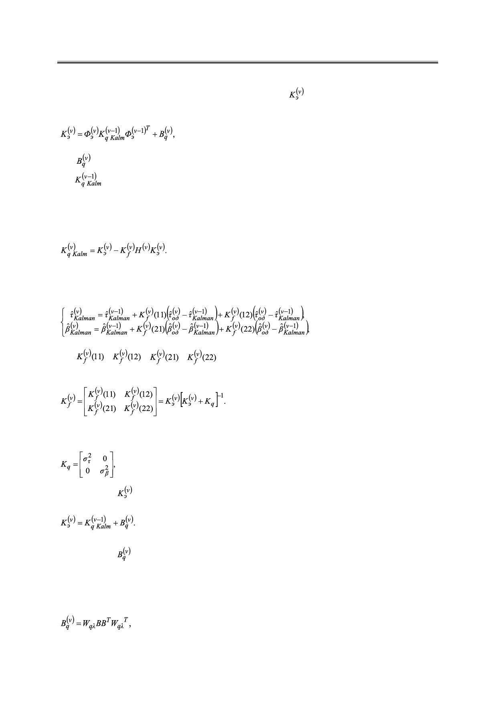

Линейная фильтрация выходных данных в охранной однопозиционной системе
В (15) Kq – ковариационная матрица измерения, – экстраполяционная ковариа-
ционная матрица погрешности оценки вектора состояния, которая вычисляется, как:
(16)
где – ковариационная матрица, характеризующая стохастическое движение ОН;
– ковариационная матрица погрешности оценки вектора состояния на преды-
дущем шаге.
Соответственно, ковариационная матрица оценки вектора состояния на текущем
шаге имеет следующий вид:
(17)
В случае однопозиционной охранной системы уравнения (14) записываются следу-
ющим образом:
(18)
где
,
,
,
выглядит так:
− элементы матрицы (15), которая в нашем случае
(19)
При этом:
(20)
Матрица вычисляется здесь в виде:
(21)
Матрица имеет некоторую специфику при вычислении, связанную с тем, что ОН
движется в декартовой системе координат, причем фильтрация происходит в полярной
системе координат. Поэтому необходимо на каждом шаге пересчитывать ковариацион-
ную матрицу:
(22)
18
Российский технологический журнал 2017 Том 5 № 5